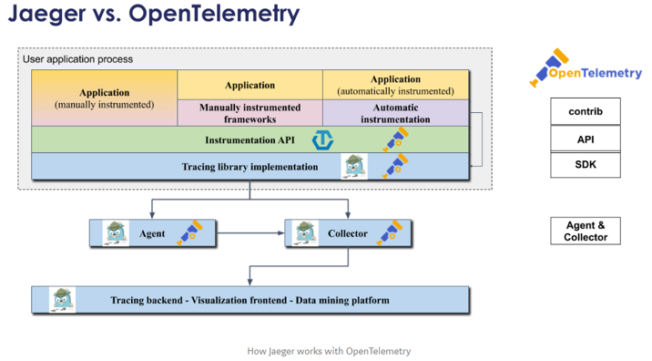
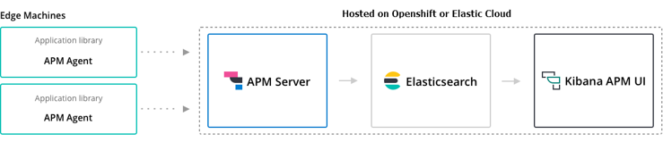

Monitoring and Performance. Prometheus, Grafana, APMs and more¶
- Monitoring and Observability
- OpenShift Cluster Monitoring Built-in solutions
- Prometheus
- Grafana
- Kibana
- Prometheus and Grafana Interactive Learning
- Logging & Centralized Log Management
- Performance
- List of Performance Analysis Tools
- Debugging Java Applications on OpenShift and Kubernetes
- Distributed Tracing. OpenTelemetry and Jaeger
- Application Performance Management (APM)
- Message Queue Monitoring
- Serverless Monitoring
- Distributed Tracing in Apache Beam
- Krossboard Converged Kubernetes usage analytics
- Instana APM
- Monitoring Etcd
- Zabbix
- Other Tools
- Other Awesome Lists
- Slides
- Tweets
Monitoring and Observability¶
- Wikipedia: Application Performance Index
- thenewstack.io: The Challenges of Monitoring Kubernetes and OpenShift
- dzone.com: Kubernetes Monitoring: Best Practices, Methods, and Existing Solutions Kubernetes handles containers in several computers, removing the complexity of handling distributed processing. But what’s the best way to perform Kubernetes monitoring?
- blog.cloud-mercato.com: New HTTP benchmark tool pycurlb
- Dzone: Comparison of Open Source API Analytics and Monitoring Tools There are a variety of open-source projects you can leverage to build a complete API analytics platform. This articles compares them.
- sysdig.com: Seven Kubernetes monitoring best practices every monitoring solution should enable
- CNCF End User Technology Radar: Observability, September 2020
- magalix.com: Monitoring Kubernetes Clusters Through Prometheus & Grafana
- instana.com: The Hidden Cost of Observability: Data Volume
- learnsteps.com: Monitoring Infrastructure System Design
- bravenewgeek.com: The Observability Pipeline
- thenewstack.io: 3 Key Configuration Challenges for Kubernetes Monitoring with Prometheus
- sysdig.com: Kubernetes Monitoring with Prometheus, the ultimate guide
- sysdig.com: How to monitor kube-proxy In this article, you will learn how to monitor kube-proxy to ensure the correct health of your cluster network.
- thenewstack.io: Monitoring vs. Observability: Whats the Difference?
- getenroute.io: TSDB, Prometheus, Grafana In Kubernetes: Tracing A Variable Across The OSS Monitoring Stack
- dashbird.io: Monitoring vs Observability: Can you tell the difference?
- thenewstack.io: Monitoring as Code: What It Is and Why You Need It
- thenewstack.io: Observability Wont Replace Monitoring (Because It Shouldnt)
- devopscurry.com: Understanding Container Monitoring and popular Container Monitoring Tools in 2021
- matiasmct.medium.com: Observability at Scale
- dynatrace.com: How to solve the challenges of multicloud AWS, Azure and GCP observability
- logz.io: Top 11 Open Source Monitoring Tools for Kubernetes
- thenewstack.io: Kubernetes Observability Challenges in Cloud Native Architecture
- opsdis.com: Building a custom monitoring solution with Grafana, Prometheus and Loki
- harness.io: Metrics to Improve Continuous Integration Performance
- thenewstack.io: Best Practices to Optimize Infrastructure Monitoring within DevOps Teams
- faun.pub: DevOps Meets Observability
- skilledfield.com.au: Monitoring Kubernetes and Docker Container Logs
- thenewstack.io: Growing Adoption of Observability Powers Business Transformation
- blog.thundra.io: What CI Observability Means for DevOps
- thenewstack.io: Monitoring API Latencies After Releases: 4 Mistakes to Avoid Find 4 common mistakes engineers make when using histograms to monitor API latencies from release to release.
- thenewstack.io: Monitoring API Latencies After Releases: 4 Mistakes to Avoid
- thenewstack.io: DevOps Observability from Code to Cloud
- ortelius.io: Microservice Monitoring and Visualization with Ortelius open source project
- thenewstack.io: CI Observability for Effective Change Management
- thenewstack.io: Monitor Your Containers with Sysdig
- medium: Monitoring Microservices - Part 1: Observability Achieving observability with probes, logs, metrics, and traces
- thenewstack.io: Applying Basic vs. Advanced Monitoring Techniques
- cloudforecast.io: cAdvisor and Kubernetes Monitoring Guide
- hmh.engineering: Musings on microservice observability!
- stackoverflow.blog: Observability is key to the future of software (and your DevOps career) Observability platforms enable you to easily figure out whats happening with every request and to identify the cause of issues fast. Learning the principles of observability and OpenTelemetry will set you apart from the crowd and provide you with a skill set that will be in increasing demand as more companies perform cloud migrations.
- forbes.com: Who Should Own The Job Of Observability In DevOps?
- dzone: Monitoring Web Servers Should Never Be Complex Monitoring Web Services can become very very complex. But what really is needed to detect a failure? And how can setup and simplify your monitoring?
- dynatrace.com: What is observability? Not just logs, metrics and traces
- thenewstack.io: Observability Is the New Kubernetes
- learnsteps.com: Logging Infrastructure System Design Logging infrastructure system design is very important for each and every infrastructure as you need to look into logs. When you have a huge number of applications talking to each other there is an enormous amount of logs that they produce. Handling this amount of logs can be very costly and a headache. Lets look at this problem for handling your logs at scale and Logging infrastructure System Design.
-
medium.com: Monitoring Microservices - Part 1: Observability | Anderson Carvalho Achieving observability with probes, logs, metrics, and traces. The Observability Pyramid comprises Probes, Logs, Metrics, and Traces:
-
Probes: Probes are often exposed as endpoints and used by external agents like load balancers, container orchestrators, application servers, and sysadmins before deciding what to do next. The most common probes are starting, ready, and live. The startup probe is on during the component bootstrap phase. The liveness probe is on from the time the component starts until it stops running. The readiness probe is on during the period where the component is ready/open to receive requests or process workload.
-
Logs: Logs are messages produced during the component execution that capture a piece of relevant information. Usually, we classify log messages into all, debug, info, warn, error, and fatal. Logs can produce a huge amount of data and contain sensitive information. A good practice is to apply different log levels depending on the environment.
-
Log Aggregation: Each component generates one or more log files. Since distributed systems are composed of multiples components, its a daunting and miserable task to dig into a bunch of log files during troubleshooting. Thus, log aggregation is highly recommended for Microservices.
-
Metrics: Metrics give us the visibility of good and bad events that happen inside of an application. Metrics help us to distinguish between normal and abnormal application behavior. Usually, we collect, count, summarize and compare events related to rate, errors, duration, and saturation to produce metrics.
-
Traces: Traces record the flow of data between different components and execution details of each one along the way. By tracing we can discover the relationships, dependencies between components, identify bottlenecks, comprehend the data flow, and the time span on each component.
- infoworld.com: The RED method: A new strategy for monitoring microservices By using the RED metricsrate, error, and durationyou can get a solid understanding of how your services are performing for end-users.
-
Key Performance Indicator (KPI)¶
OpenShift Cluster Monitoring Built-in solutions¶
OpenShift 3.11 Metrics and Logging¶
OpenShift Container Platform Monitoring ships with a Prometheus instance for cluster monitoring and a central Alertmanager cluster. In addition to Prometheus and Alertmanager, OpenShift Container Platform Monitoring also includes a Grafana instance as well as pre-built dashboards for cluster monitoring troubleshooting. The Grafana instance that is provided with the monitoring stack, along with its dashboards, is read-only.
| Monitoring Component | Release | URL |
|---|---|---|
| ElasticSearch | 5 | OpenShift 3.11 Metrics & Logging |
| Fluentd | 0.12 | OpenShift 3.11 Metrics & Logging |
| Kibana | 5.6.13 | kibana 5.6.13 |
| Prometheus | 2.3.2 | OpenShift 3.11 Prometheus Cluster Monitoring |
| Prometheus Operator | Prometheus Operator technical preview | |
| Prometheus Alert Manager | 0.15.1 | OpenShift 3.11 Configuring Prometheus Alert Manager |
| Grafana | 5.2.3 | OpenShift 3.11 Prometheus Cluster Monitoring |
Prometheus and Grafana¶
- github.com/prometheus-operator
- redhat.com: How to gather and display metrics in Red Hat OpenShift (Prometheus + Grafana)
- Generally Available today: Red Hat OpenShift Container Platform 3.11 is ready to power enterprise Kubernetes deployments
- The Challenges of Monitoring Kubernetes and OpenShift 3.11
- OCP 3.11 Metrics and Logging
- Prometheus Cluster Monitoring
- Prometheus Alert Manager
- Leveraging Kubernetes and OpenShift for automated performance tests (part 1)
- Building an observability stack for automated performance tests on Kubernetes and OpenShift (part 2)
- Promster: Use Prometheus in huge deployments with dynamic clustering and scrape sharding capabilities based on ETCD service registration
- developers.redhat.com: Monitoring .NET Core applications on Kubernetes
- Systems Monitoring with Prometheus and Grafana
Custom Grafana Dashboard for OpenShift 3.11¶
By default OpenShift 3.11 Grafana is a read-only instance. Many organizations may want to add new custom dashboards. This custom grafana will interact with existing Prometheus and will also add all out-of-the-box dashboards plus few more interesting dashboards which may require from day to day operation. Custom Grafana pod uses OpenShift oAuth to authenticate users and assigns “Admin” role to all users so that users can create their own dashboards for additional monitoring.
Getting Started with Custom Dashboarding on OpenShift using Grafana. This repository contains scaffolding and automation for developing a custom dashboarding strategy on OpenShift using the OpenShift Monitoring stac
Capacity Management Grafana Dashboard¶
This repo adds a capacity management Grafana dashboard. The intent of this dashboard is to answer a single question: Do I need a new node? . We believe this is the most important question when setting up a capacity management process. We are aware that this is not the only question a capacity management process may need to be able to answer. Thus, this should be considered as the starting point for organizations to build their capacity management process.
Software Delivery Metrics Grafana Dashboard¶
This repo contains tooling to help organizations measure Software Delivery and Value Stream metrics.
Prometheus for OpenShift 3.11¶
This repo contains example components for running either an operational Prometheus setup for your OpenShift cluster, or deploying a standalone secured Prometheus instance for configurating yourself.
OpenShift 4¶
OpenShift Container Platform includes a pre-configured, pre-installed, and self-updating monitoring stack that is based on the Prometheus open source project and its wider eco-system. It provides monitoring of cluster components and includes a set of alerts to immediately notify the cluster administrator about any occurring problems and a set of Grafana dashboards. The cluster monitoring stack is only supported for monitoring OpenShift Container Platform clusters.
OpenShift Cluster Monitoring components cannot be extended since they are read only.
Monitor your own services (technology preview): The existing monitoring stack can be extended so you can configure monitoring for your own Services.
| Monitoring Component | Deployed By Default | OCP 4.1 | OCP 4.2 | OCP 4.3 | OCP 4.4 |
|---|---|---|---|---|---|
| ElasticSearch | No | 5.6.13.6 | |||
| Fluentd | No | 0.12.43 | |||
| Kibana | No | 5.6.13 | |||
| Prometheus | Yes | 2.7.2 | 2.14.0 | 2.15.2 | |
| Prometheus Operator | Yes | 0.34.0 | 0.35.1 | ||
| Prometheus Alert Manager | Yes | 0.16.2 | 0.19.0 | 0.20.0 | |
| kube-state-metrics | Yes | 1.8.0 | 1.9.5 | ||
| Grafana | Yes | 5.4.3 | 6.2.4 | 6.4.3 | 6.5.3 |
Prometheus¶
Grafana¶
Kibana¶
- Kibana
- dzone: Kibana Tutorial: Part 1 - Getting Started
- dzone: Getting Started With Kibana Advanced Searches
- dzone: Kibana Hacks: 5 Tips and Tricks
- juanonlab.com: Dashboards de Kibana
- skedler.com: Kibana Customization The brilliant beginners guide to simplifying Kibana for non-technical users
- dev.to: Beginner’s guide to understanding the relevance of your search with Elasticsearch and Kibana
Prometheus and Grafana Interactive Learning¶
Logging & Centralized Log Management¶
ElasticSearch¶
- pythonsimplified.com: Elasticsearch Core Concepts Explained
- zdnet.com: AWS, as predicted, is forking Elasticsearch Amazon Web Services, however, isn’t the only one who dislikes Elastic’s move to relicense Elasticsearch under the non-open-source Server Side Public License.
- amazon.com: Stepping up for a truly open source Elasticsearch
- Store NGINX access logs in Elasticsearch with Logging operator This guide describes how to collect application and container logs in Kubernetes using the Logging operator, and how to send them to Elasticsearch.
- blog.streammonkey.com: How We Serverlessly Migrated 1.58 Billion Elasticsearch Documents
- youtube: ELK for beginners - by XavkiEn
- blog.bigdataboutique.com: Tuning Elasticsearch: The Ideal Java Heap Size
- javatechonline.com: How To Monitor Spring Boot Microservices Using ELK Stack?
- dzone: Running Elasticsearch on Kubernetes A bit of a cross-over with the Cloud Zone, we explore the structures of both Elasticsearch and Kubernetes, and how to deploy Elasticsearch on K8s.
OpenSearch¶
- opensearch.org
- amazon.com: Introducing OpenSearch
- logz.io: Logz.io Announces Support for OpenSearch; A Community-driven Open Source Fork of Elasticsearch and Kibana
- techrepublic.com: OpenSearch: AWS rolls out its open source Elasticsearch fork
- thenewstack.io: This Week in Programming: AWS Completes Elasticsearch Fork with OpenSearch
- logz.io: OpenSearch Is Now Generally Available!
- thenewstack.io: This Week in Programming: The ElasticSearch Saga Continues
- aws.amazon.com: Keeping clients of OpenSearch and Elasticsearch compatible with open source
- aws.amazon.com: Amazon Elasticsearch Service Is Now Amazon OpenSearch Service and Supports OpenSearch 1.0
EFK¶
Performance¶
- dzone.com: The Keys to Performance Tuning and Testing
- dzone.com: How Performance Tuning and Testing are Changing
- Performance Patterns in Microservices-Based Integrations Almost all applications that perform anything useful for a given business need to be integrated with one or more applications. With microservices-based architecture, where a number of services are broken down based on the services or functionality offered, the number of integration points or touch points increases massively.
List of Performance Analysis Tools¶
- Threadumps + heapdumps + GC analysis tools
- en.wikipedia.org/wiki/List_of_performance_analysis_tools
- InspectIT
- VisualVM
- OverOps
- FusionReactor
- tier1app.com
- fastthread.io
- gceasy.io
- heaphero.io
Thread Dumps. Debugging Java Applications¶
- How to read a Thread Dump
- Performance Patterns in Microservices-Based Integrations A must read!
- Dzone: how to take thread dumps
- Thread Dump Analyzers: fastThread, Spotify TDA, IBM Thread and Monitor Dump Analyzer for Java, TDA - Thread Dump Analyzer
- blog.arkey.fr: Using JDK FlightRecorder and JDK Mission Control
- FastThread.io: Thread dumps can be uploaded via Web or API Call from within the POD (jstack must be available within the container):
#!/bin/sh
#GenerateNthreaddumpsoftheprocessPIDwithanINTERVALbetweeneachdump.
if[$#-ne3];then
echoGeneratesJavathreaddumpsusingthejstackcommand.
echo
echousage:$0process_idrepetitionsinterval
exit1
fi
PID=$1
N=$2
INTERVAL=$3
for((i=1;i<=$N;i++))
do
d=$(date+%Y%m%d-%H%M%S)
dump="threaddump-$PID-$d.txt"
echo$iof$N:$dump
jstack-l$PID>$dump
curl-XPOST--data-binary@./$dumphttps://fastthread.io/fastthread-api?apiKey=<APIKEY>--header"Content-Type:text"
sleep$INTERVAL
done
- How to run this script from within the POD:
./script_thread_dump.sh 1 15 3, where:- 1: PID of java process (1 in containers running a single process, check with ps ux command).
- 15: 15 repetitions or thread dumps
- 3: interval of 3 seconds between each thread dump.
- According to some references only 3 thread dumps captured in a timeframe of 10 seconds is necessary (when we want to troubleshoot a Java issue during a service degradation).
- Sample thread dump analysis reports generated by fastThread:
Debugging Java Applications on OpenShift and Kubernetes¶
- developers.redhat.com: Troubleshooting java applications on openshift (Jolokia)
- Debugging Java Applications On OpenShift and Kubernetes
- Remote Debugging of Java Applications on OpenShift
- VisualVM: JVisualVM to an Openshift pod
- redhat.com: How do I analyze a Java heap dump?
Distributed Tracing. OpenTelemetry and Jaeger¶
- Microservice Observability with Distributed Tracing: OpenTelemetry.io (OpenTracing.io + OpenCensus.io = OpenTelemetry.io)
- Jaeger
- zipkin.io
- OpenTracing.io
- grafana.com: A beginner’s guide to distributed tracing and how it can increase an application’s performance
- awkwardferny.medium.com: Setting up Distributed Tracing in Kubernetes with OpenTracing, Jaeger, and Ingress-NGINX
- ploffay.medium.com: Five years evolution of open-source distributed tracing
Microservice Observability with Distributed Tracing. OpenTelemetry.io¶
- Used for monitoring and troubleshooting microservices-based distributed systems.
- OpenTelemetry.io:
- Unified standard (open, vendor-neutral API), merge of OpenCensus.io and OpenTracing.io.
- A single set of system components and language-specific telemetry libraries to standardize how the industry uses metrics, traces, and eventually logs to enable observability.
- dynatrace.com: What is OpenTelemetry?An open-source standard for logs, metrics, and traces
- A major component of theOpenTelemetry specificationis distributed tracing.
- Tracing is about analyzing, recording, and describing transactions.
- Distributed Tracing: Troubleshooting requests between interconnected cloud-based microservices cant always be done with logs and metrics alone. This is where distributed tracing comes into play: It provides developers with a detailed view of individual requests as they hop through a system of microservices. With distributed tracing you can:
- Trace the path of a request as it travels across a complex system.
- Discover the latency of the components along that path.
- Know which component in the path is creating a bottleneck or failure.
- Performance: Latency is a very important metric in microservices. Latency problems in one service will impact the overall request latency when chaining calls to different microservices. Every call to a microservice should record a trace, which is basically a record of how much time it took to respond. It’s possible to add more details to the function level, including the action, the result, and the pass to the next service. The hard part is triaging all traces in a request from a client. Usually, a trace ID header has to be sent in every request. If there isn’t one, the logging library creates it and it will represent the first trace in a request. Adding traces with OpenCensus is simply a matter of including the libraries and registering an exporter.
- Monitoring in a Microservices/Kubernetes World: In distributed system architectures like microservices, having visibility from different perspectives will be critical at troubleshooting time. Many things could happen in a request when there are many parts constantly interacting at the same time. The most common method is to write logs to the stdout and stderr streams.
- For example, a latency problem in the system could exist because a microservice is not responding correctly. Maybe Kubernetes is restarting the pod too frequently, or perhaps the cluster is out of capacity and can’t schedule any more pods. But for this reason, tools like Istio exist; by injecting a container in every pod, you can get a pretty good baseline of telemetry. Additionally, when you add instrumentation with libraries like OpenCensus, you can deeply understand what’s happening with and within each service.
- All this information will need a storage location, and as a good practice, you might want to have it a centralized location to provide access to anyone in the team not just for the operations team.
- Older Distributed Tracing Solutions:
- Medium: Distributed Tracing and Monitoring using OpenCensus
- Dzone: Zipkin vs. Jaeger: Getting Started With Tracing Learn about Zipkin and Jaeger, how they work to add request tracing to your logging routine, and how to choose which one is the right fit for you.
- opensource.com: Distributed tracing in a microservices world What is distributed tracing and why is it so important in a microservices environment?
- opensource.com: 3 open source distributed tracing tools Find performance issues quickly with these tools, which provide a graphical view of what’s happening across complex software systems.
- newrelic.com: OpenTracing, OpenCensus, OpenTelemetry, and New Relic (Best overview of OpenTelemetry)
- Theres no OpenTelemetry UI, instead Jaeger UI (or any APM like Dynatrace or New Relic) can be used as Tracing backend + Visualization frontend + Data mining platform of OpenTelemetry API/SDK.
- thenewstack.io: Tracing: Why Logs Arent Enough to Debug Your Microservices

Jaeger VS OpenTelemetry. How Jaeger works with OpenTelemetry¶
- medium: Jaeger VS OpenTracing VS OpenTelemetry
- medium: Using Jaeger and OpenTelemetry SDKs in a mixed environment with W3C Trace-Context

Jaeger vs Zipkin¶
Grafana Tempo distributed tracing system¶
- Grafana Tempo Grafana Tempo is an open source, easy-to-use and high-scale distributed tracing backend. Tempo requires only object storage to operate and is deeply integrated with Grafana, Prometheus, and Loki.
- grafana.com: Announcing Grafana Tempo, a massively scalable distributed tracing system
- opensource.com: Get started with distributed tracing using Grafana Tempo Grafana Tempo is a new open source, high-volume distributed tracing backend.
Application Performance Management (APM)¶
- APM in wikipedia: The monitoring and management of performance and availability ofsoftwareapplications. APM strives to detect and diagnose complex application performance problems to maintain an expectedlevel of service. APM is “the translation ofIT metricsinto business meaning.
- Tip: Download APM report from IT Central Station
- Awesome APM
- dzone.com: APM Tools Comparison
- dzone.com: Java Performance Monitoring: 5 Open Source Tools You Should Know
- dzone.com: 14 best performance testing tools and APM solutions
- Exception Tracking:
- sentry.io
- APMs like Dynatrace, etc.
- APM Tools:
- datadoghq.com
- blog.porter.run: Datadog on Kubernetes: Avoiding Common Pitfalls Install Datadog on Kubernetes and configure additional features like DogStatsD and APM while avoiding common pitfalls.
- honeycomb.io
- lightstep.com
- skywalking.apache.org
- AppDynamics
- New Relic
- Dynatrace
- SigNoz SigNoz helps developers monitor their applications & troubleshoot problems, an open-source alternative to DataDog, NewRelic, etc.
- datadoghq.com
Elastic APM¶
- Elastic APM
- Elastic APM Server:
- Mininimum elasticsearch requirement is 6.2.x or higher
- Built-in elasticsearch 5.6 in Openshift 3 & Openshift 4 cannot be integrated with Elastic APM Server.
- Solutions: Deploy a higher version of Elasticsearch + Kibana on a new Project dedicated to Elastic APM; or setup an Elastic Cloud account.
- Elastic APM Server Docker image (oss & openshift compliant).
- elastic.co: Using the Elastic APM Java Agent on Kubernetes
- Monitoring Java applications with Elastic: Getting started with the Elastic APM Java Agent
- Jenkins pipeline shared library for the project Elastic APM

Dynatrace APM¶
- adictosaltrabajo.com: Monitorizacin y anlisis de rendimiento de aplicaciones con Dynatrace APM
- dynatrace.com: openshift monitoring
- dynatrace.com: Dynatrace monitoring for Kubernetes and OpenShift
- dynatrace.com: Deploy OneAgent on OpenShift Container Platform
- Successful Kubernetes Monitoring Three Pitfalls to Avoid
- My Dynatrace proof of concept
- Tutorial: Guide to automated SRE-driven performance engineering
- dynatrace.com: 4 steps to modernize your IT service operations with Dynatrace
- dynatrace.com: Monitoring of Kubernetes Infrastructure for day 2 operations
- dynatrace.com: The Power of OpenShift, The Visibility of Dynatrace
- dynatrace.com: Why conventional observability fails in Kubernetes environmentsA real-world use case
- dynatrace.com: A look behind the scenes of AWS Lambda and our new Lambda monitoring extension
- dynatrace.com: Analyze all AWS data in minutes with Amazon CloudWatch Metric Streams available in Dynatrace
- dynatrace.com: New Dynatrace Operator elevates cloud-native observability for Kubernetes
Message Queue Monitoring¶
| Messaging Solution | Monitoring Solution | URL |
|---|---|---|
| ActiveMQ 5.8.0+ | Dynatrace | ref |
| ActiveMQ Artemis | Micrometer Collector + Prometheus | ref1, ref2 |
| IBM MQ | IBM MQ Exporter for Prometheus | ref |
| Kafka | Dynatrace | ref1, ref2, ref3 |
| Kafka | Prometheus JMX Exporter | ref1, ref2, ref3, ref4, ref5, ref6, ref7 |
| Kafka | Kafka Exporter Use JMX Exporter to export other Kafka’s metrics |
ref |
| Kafka | Kafdrop Kafka Web UI | ref |
| Kafka | ZooNavigator: Web-based ZooKeeper UI | ref |
| Kafka | CMAK (Cluster Manager for Apache Kafka, previously known as Kafka Manager) | ref |
| Kafka | Xinfra Monitor (renamed from Kafka Monitor, created by Linkedin) | ref |
| Kafka | Telegraf + InfluxDB | ref |
| Red Hat AMQ Broker (ActiveMQ Artemis) | Prometheus plugin for AMQ Broker To monitor the health and performance of your broker instances, you can use the Prometheus plugin for AMQ Broker to monitor and store broker runtime metrics. Prometheus is software built for monitoring large, scalable systems and storing historical runtime data over an extended time period. The AMQ Broker Prometheus plugin exports the broker runtime metrics to Prometheus format, enabling you to use Prometheus itself to visualize and run queries on the data. You can also use a graphical tool, such as Grafana, to configure more advanced visualizations and dashboards for the metrics that the Prometheus plugin collects. The metrics that the plugin exports to Prometheus format are listed below. A description of each metric is exported along with the metric itself. |
ref1, ref2, ref3 |
| Red Hat AMQ Streams (Kafka) | JMX, OpenTracing+Jaeger ZooKeeper, the Kafka broker, Kafka Connect, and the Kafka clients all expose management information using Java Management Extensions (JMX). Most management information is in the form of metrics that are useful for monitoring the condition and performance of your Kafka cluster. Like other Java applications, Kafka provides this management information through managed beans or MBeans. JMX works at the level of the JVM (Java Virtual Machine). To obtain management information, external tools can connect to the JVM that is running ZooKeeper, the Kafka broker, and so on. By default, only tools on the same machine and running as the same user as the JVM are able to connect. Distributed Tracing with Jaeger: - Kafka Producers, Kafka Consumers, and Kafka Streams applications (referred to as Kafka clients) - MirrorMaker and Kafka Connect - Kafka Bridge |
ref1,ref2 |
| Red Hat AMQ Streams Operator | AMQ Streams Operator (Prometheus & Jaeger), strimzi, jmxtrans How to monitor AMQ Streams Kafka, Zookeeper and Kafka Connect clusters using Prometheus to provide monitoring data for example Grafana dashboards. Support for distributed tracing in AMQ Streams, using Jaeger: - You instrument Kafka Producer, Consumer, and Streams API applications for distributed tracing using an OpenTracing client library. This involves adding instrumentation code to these clients, which monitors the execution of individual transactions in order to generate trace data. - Distributed tracing support is built in to the Kafka Connect, MirrorMaker, and Kafka Bridge components of AMQ Streams. To configure these components for distributed tracing, you configure and update the relevant custom resources. |
ref1, ref2, ref3 strimzi, ref4: jmxtrans, ref5: banzai operator |
| Red Hat AMQ Broker Operator | Prometheus (recommended) or Jolokia REST to JMX To monitor runtime data for brokers in your deployment, use one of these approaches: - Section 9.1, Monitoring broker runtime data using Prometheus - Section 9.2, Monitoring broker runtime data using JMX In general, using Prometheus is the recommended approach. However, you might choose to use the Jolokia REST interface to JMX if a metric that you need to monitor is not exported by the Prometheus plugin. For more information about the broker runtime metrics that the Prometheus plugin exports, see Section 9.1.1, Overview of Prometheus metrics |
ref1, ref2, ref3, ref4, ref5 |
Red Hat AMQ 7 Broker Monitoring solutions based on Prometheus and Grafana¶
This is a selection of monitoring solutions suitable for RH AMQ 7 Broker based on Prometheus and Grafana:
| Environment | Collector/Exporter | Details/URL |
|---|---|---|
| RHEL | Prometheus Plugin for AMQ Broker | ref |
| RHEL | Prometheus JMX Exporter | Same solution applied to ActiveMQ Artemis |
| OpenShift 3 | Prometheus Plugin for AMQ Broker | Grafana Dashboard not available, ref1, ref2 |
| OpenShift 4 | Prometheus Plugin for AMQ Broker | Check if Grafana Dashboard is automatically setup by Red Hat AMQ Operator |
| OpenShift 3 | Prometheus JMX Exporter | Grafana Dashboard not available, ref1, ref2 |
Serverless Monitoring¶
Distributed Tracing in Apache Beam¶
Krossboard Converged Kubernetes usage analytics¶
- Krossboard All in one single place, Krossboard tracks the usage of all your clusters over time, it helps forecast capacity scale up/down, thereby enabling you to easily anticipate and master operations costs.
- Krossboard: A centralized usage analytics approach for multiple Kubernetes
Instana APM¶
Monitoring Etcd¶
Zabbix¶
- openshift.com: Monitoring Infrastructure Openshift 4.x Using Zabbix Operator
- openshift.com: How to Monitor Openshift 4.x with Zabbix using Prometheus - Part 2
- cloud.redhat.com: Monitoring Infrastructure Openshift 4.x Using Zabbix Operator
Other Tools¶
- Netdata Netdata’s distributed, real-time monitoring Agent collects thousands of metrics from systems, hardware, containers, and applications with zero configuration.
- PM2 is a production process manager for Node.js applications with a built-in load balancer. It allows you to keep applications alive forever, to reload them without downtime and to facilitate common system admin tasks.
- Huginn Create agents that monitor and act on your behalf. Your agents are standing by!
- OS Query SQL powered operating system instrumentation, monitoring, and analytics.
- Glances Glances an Eye on your system. A top/htop alternative for GNU/Linux, BSD, Mac OS and Windows operating systems. It is written in Python and uses libraries to grab information from your system. It is based on an open architecture where developers can add new plugins or exports modules.
- TDengine is an open-sourced big data platform under GNU AGPL v3.0, designed and optimized for the Internet of Things (IoT), Connected Cars, Industrial IoT, and IT Infrastructure and Application Monitoring.
- stackpulse.com: Automated Kubernetes Pod Restarting Analysis with StackPulse
- Checkly is the API & E2E monitoring platform for the modern stack: programmable, flexible and loving JavaScript.
- network-king.net: IoT use in healthcare grows but has some pitfalls
- Zebrium Monitoring detects problems, Zebrium finds root cause Resolve your software incidents 10x faster
Other Awesome Lists¶
Slides¶
Click to expand!
Tweets¶
Click to expand!
The ecosystem of CI / CD tools that integrates in #OpenTelemetry traces is growing rapidly with already #Jenkins, #Maven, #Ansible, and the generic otel-clihttps://t.co/GeKUMd5zl4https://t.co/KrMIGZ3vkphttps://t.co/UiJ0Dk78Pdhttps://t.co/UdwnxXOUa4 pic.twitter.com/MsYViY6jwf
— Cyrille Le Clerc (@cyrilleleclerc) August 24, 2021
Distributed tracing is like IPv6. The entire premise reveals itself when critical usage is achieved. Hence, there are few organizations that has resources to do the hard work of retrofitting it into their existing systems. For green field companies, its different.
— Jaana Dogan (@rakyll) September 6, 2021
One of the biggest frictions of the container ecosystem to me is the fact that I still have to deal with the node. Either directly or indirectly, managed or unmanaged, visible to me or not. And it sucks.
— Jaana Dogan (@rakyll) September 9, 2021
We want a stack debuggable all the way down to the bare metal and we want a stack that encapsulates all the complexity. We don't know what we want and all compute ended up being leaky abstractions.
— Jaana Dogan (@rakyll) September 9, 2021
As someone who is working on monitoring and performance, my job is about leaking into abstractions. Whatever abstraction layer I am targeting, I often engage with all to cover everything down to bare metal.
— Jaana Dogan (@rakyll) September 17, 2021
If your observability strategy only relies on your service mesh, you are in the early stages of putting together a strategy. And you must have a very reliable service mesh.
— Jaana Dogan (@rakyll) September 30, 2021
This. I work with tens of companies & they sometimes want to hire me to "fix their observability". You can't throw some tools or a single person to this problem. Observability is like security, it's a vertical. You have to embed it to your eng culture. https://t.co/poFsLhsxq9
— Jaana Dogan at KubeCon (@rakyll) October 13, 2021